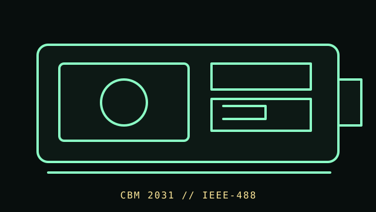

[ FLOPPY DRIVES // IDENTIFIED MODEL ]
Commodore 2031 Disk Drive
The Commodore 2031 is a single-drive 5.25-inch disk system in Commodore’s IEEE-488 peripheral family. Its host bus and on-drive electronics distinguish it from a PC floppy mechanism and from Commodore serial-bus drives.

MODEL IDENTIFICATION: Commodore 2031; capture nameplate, board and ROM markings, interface connector, and any OEM suffix. This record keeps variant-dependent claims qualified; verify the physical unit and applicable manual before connecting, servicing, or formatting media.
Recorded specifications
| Catalog model | Commodore 2031 Disk Drive |
|---|---|
| Device type | External single 5.25-inch drive with integrated controller |
| Interface / connector | IEEE-488 / GPIB parallel peripheral bus; host and command compatibility depend on Commodore system and software. |
| Media / formats | 5.25-inch magnetic disk formatted for the 2031/Commodore DOS environment. Geometry and compatibility depend on disk/software; no PC capacity is implied. |
| Revision caution | Match full model code, board/ROM/firmware revision, connector, cable, and documentation edition. Family-level ratings and host claims do not automatically apply to every unit. |
Host-controller and format compatibility
- Connect only to a compatible IEEE-488 host or documented interface; it is not a Commodore IEC serial drive and not a direct PC floppy-controller device.
- Model-specific command and DOS support is host/software dependent. Identify firmware and board revision before transferring parts or relying on compatibility.
- Do not infer media interchangeability with PC disks from the 5.25-inch size; recording and directory formats are system-specific.
Preservation and safe cleaning
Disconnect mains power and IEEE-488 before service. Reject contaminated or damaged disks. Use the drive’s applicable service manual for head cleaning and alignment; do not touch the head or apply household solvents to media.
For a disk acquisition, record the physical media label and condition, drive/model/revision, controller, host, software/firmware, settings, and any errors. Keep original media and raw captures/images unchanged; checksum verified copies and document conversions as derivatives.
Primary manuals & standards/archive references
- Commodore Disk Reference Manual (covers 2031, 4040, 8050, 8250) — Zimmers.net archiveCommodore primary reference covering supported drive families and disk commands.
- Commodore 2031/4040/8050/8250 disk manuals archive indexArchive of Commodore operator and service manuals; select the document matching the nameplate.
Source scope is stated per link. Prefer the matching manufacturer manual and revision over family summaries. Capacities and recording modes are omitted when not supported for the exact model and format.